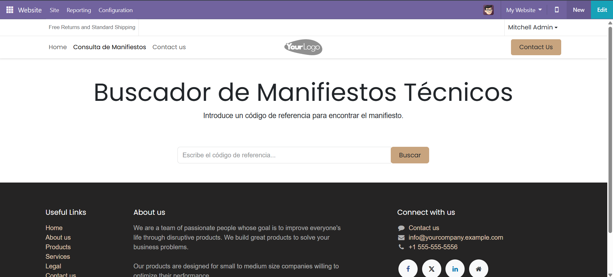

Este módulo añade una capa de seguridad esencial para evitar errores comunes en el proceso de ventas. Impide estrictamente que se procesen facturas de cliente y proveedor, así como notas de crédito y pedidos de punto de venta con un monto total de 0. Adicionalmente, verifica la disponibilidad de stock antes de confirmar órdenes de venta.
Impide la confirmación de facturas (Cliente/Proveedor) y notas rectificativas si el monto total es 0, evitando registros contables erróneos.
Bloquea la confirmación de Órdenes de Venta si no hay suficiente stock a mano (qty_available), previniendo ventas sin inventario.
Restringe la creación de pedidos en el Punto de Venta si el monto total es 0, asegurando que cada transacción tenga valor.
Soluciones profesionales para su negocio.
Visita nuestra web